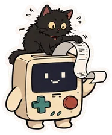

/ LE MANUEL
Gagner sa vie de loin.
Se faire payer depuis l’étranger, fixer son tarif, comprendre la crypto : six leçons d’argent. Puis un carnet de route pour travailler de partout, un maître-cours sur la gamification, et quatre services pour aller plus loin.


ÉTEINTE
Deux heures du matin
0:00 / 2:00
La radio de l’atelier
Quatre instrumentaux faits pour l’atelier. Rien ne joue tant que vous n’appuyez pas.
/ LA RONDE DE NUIT
Kūro habite cette page.
Il vous rejoint quand vous lisez, il juge vos réponses, il s’endort sur la radio. Prenez la manette : sept sceaux sont cachés entre la radio, les leçons et les services. Trouvez-les tous, un dessin vous attend.
0 / 7 sceaux
← → marcher · ↑ bondir · ↓ descendre · Espace sauter · Échap quitter
Votre appareil demande moins de mouvement : Kūro dort sur la radio et le jeu est coupé.
/ SIX LEÇONS · L’ARGENT
Le manuel de l’argent.
Une idée, un geste, une question. Chaque bonne réponse tamponne votre passeport.
0 / 6 tampons
Se faire payer de l’étranger
Un client à l’étranger peut vous payer par quatre routes. Aucune n’est la meilleure partout : comparez le délai, les frais et ce que votre banque accepte.
Virement bancaireLe client vire sur votre compte. Il lui faut votre IBAN ou votre numéro de compte, le code SWIFT/BIC de votre banque et une facture. Demandez d’abord à votre banque comment elle reçoit un virement de l’étranger, et dans quelle devise il vous est crédité.
Plateforme de paiementUn service en ligne encaisse pour vous et reverse sur votre compte ou votre carte. Vérifiez d’abord, sur le site du service lui-même, qu’il ouvre des comptes aux résidents de votre pays et comment on en retire l’argent.
Place de marché freelanceLa plateforme encaisse le client, garde l’argent jusqu’à la livraison, prend sa commission et vous reverse le reste. Simple pour démarrer : lisez sa commission et ses moyens de retrait avant d’accepter une mission.
CryptoLe client envoie des jetons, souvent un stablecoin, sur votre adresse. C’est rapide et irréversible. Légal dans certains pays, interdit dans d’autres, dont l’Algérie (loi 25-10) : vérifiez la loi là où vous vivez.
LA QUESTIONAvant d’accepter un premier paiement de l’étranger, que vérifier d’abord ?
Oui. La route d’abord, le prix ensuite.
Pas tout à fait. Relisez, puis réessayez.
Banques en ligne et comptes multidevises
Un compte multidevises garde plusieurs monnaies côte à côte et vous donne des coordonnées bancaires pour être payé. Ce qui coûte n’est presque jamais l’ouverture : ce sont trois frais.
Le changeLa marge prise quand une devise en devient une autre. Comparez le taux qu’on vous offre au taux du marché le même jour : l’écart est votre vrai prix.
Le transfertUn montant fixe ou un pourcentage à chaque envoi, à chaque réception ou à chaque retrait. Un petit pourcentage pèse lourd sur une grosse facture.
La carte et le retraitDes frais au distributeur, à l’étranger, ou au-delà d’un plafond mensuel. Lisez la grille avant de voyager, pas après.
Quatre questions à poser avant d’ouvrir
- Le service accepte-t-il les résidents de mon pays ?
- Dans quelles devises puis-je recevoir ?
- Comment je retire, et à quel prix ?
- Qui garde et protège mes fonds ?
LA QUESTIONDeux services affichent « 0 frais ». Où regarder ?
Oui. Un taux moins bon que le marché est un frais qui ne dit pas son nom.
Pas tout à fait. Relisez, puis réessayez.
Fixer son tarif journalier
Un tarif ne se devine pas, il se calcule : ce que vous voulez garder, plus vos charges, divisé par les jours réellement facturés.
·
· %
par jour facturé
de l’heure, pour 7 heures par jour
Dans la monnaie que vous tapez.
LA QUESTIONVous travaillez 22 jours par mois. Combien en facturez-vous, en général ?
Oui. Divisez par les jours facturés, pas par les jours travaillés.
Pas tout à fait. Relisez, puis réessayez.
Budget et trésorerie
La trésorerie, c’est le nombre de mois que vous tenez si plus rien ne rentre comme prévu. Elle se calcule en une division.
mois de trésorerie
Vos revenus sûrs couvrent vos dépenses : l’épargne ne bouge pas.
Dans la monnaie que vous tapez.
LA QUESTIONUn client paie à 60 jours. Que faut-il avoir de côté avant de dire oui ?
Oui. Le délai de paiement du client devient votre besoin de trésorerie.
Pas tout à fait. Relisez, puis réessayez.
Crypto 101
Une cryptomonnaie est une ligne dans un registre public. Ce que vous possédez, c’est la clé qui permet de la déplacer.
PortefeuilleUn logiciel ou un appareil qui garde vos clés. Il ne contient pas les pièces : elles restent dans le registre.
Phrase de récupérationUne suite de mots, souvent 12 ou 24, qui recrée vos clés. Qui la lit prend tout. Personne de sérieux ne vous la demandera jamais.
StablecoinUn jeton conçu pour suivre une monnaie, souvent le dollar. Il vaut ce que vaut la solidité de celui qui l’émet.
Frais de réseauChaque envoi paie le réseau qui le transporte. Le montant change selon le réseau et l’heure. Un envoi sur le mauvais réseau peut être perdu.
IrréversibleUn envoi confirmé ne s’annule pas. Vérifiez l’adresse, puis envoyez d’abord un petit montant.
LA QUESTIONQuelqu’un du « support » vous demande votre phrase de récupération.
Oui. Aucun support ne la demande. Jamais.
Pas tout à fait. Relisez, puis réessayez.
Web3 101
Le web3, c’est un site qui parle à un registre partagé au lieu d’une base de données privée.
BlockchainUn registre copié sur des milliers de machines, où l’on ajoute des lignes sans jamais en effacer.
Smart contractUn programme publié dans ce registre. Il s’exécute seul, et son code est lisible par tous.
Jeton et NFTUne ligne du registre qui dit qui possède quoi : une unité interchangeable, ou un objet unique.
Connecter son portefeuilleLe site lit votre adresse publique. Il ne peut rien déplacer tant que vous n’avez pas signé.
LA QUESTIONUn site vous demande de « signer » une transaction que vous ne comprenez pas.
Oui. Une signature est un accord : on lit avant de signer.
Pas tout à fait. Relisez, puis réessayez.
Ces leçons sont de l’éducation, pas un conseil financier ni un conseil en placement. Aucun signal de trading, aucune gestion de fonds, aucune promesse de gain.
Les règles changent d’un pays à l’autre. En Algérie, la loi 25-10 de juillet 2025 interdit l’achat, la vente, la détention et la promotion des crypto-actifs : vérifiez toujours la loi là où vous vivez.
/ CARNET DE ROUTE · LA VIE NOMADE
Le carnet de route.
Travailler de partout, sans se raconter d’histoires : trouver ses clients, chiffrer, se protéger, tenir le décalage horaire, garder ses fichiers et ses comptes en sûreté, préparer un départ. Huit étapes, huit tampons. Les chiffres sont les vôtres, ou ceux d’une source nommée.

/ HUIT ÉTAPES · UN TAMPON PAR BONNE RÉPONSE
0 / 8 tampons
- Clients
- Prix
- Devis
- Fuseaux
- Sac
- Sécurité
- Année
- Départ
Trouver ses clients
Les clients ne tombent pas du ciel : ils répondent à des messages. Combien en envoyer ? Cela se compte. Les clients que vous voulez, divisés par la part des gens qui répondent, puis par la part de ceux qui signent.
·
·
·
messages à envoyer par mois
par semaine, à peu près
Les taux de départ sont des exemples, pas des moyennes. Notez vos envois et vos réponses pendant un mois, puis mettez les vôtres.
LA QUESTIONVous envoyez 40 messages : 4 personnes répondent, 1 signe. Vous voulez 3 clients par mois. Que faire ?
Oui. Une signature pour 40 messages, donc 120 messages pour 3 clients. Ou un meilleur message, ou une meilleure offre : les deux taux se travaillent.
Pas tout à fait. Relisez, puis réessayez.
Chiffrer un projet
Un prix de projet, c’est du temps compté avant de commencer : votre tarif journalier, fois les jours estimés, plus une marge pour ce que vous n’avez pas vu venir. Le client, lui, veut un chiffre qui ne bouge plus.
·
· %
le prix à annoncer
à la commande, si vous demandez 40 %
Dans la monnaie que vous tapez. Pour trouver votre tarif journalier : la leçon 3 du manuel de l’argent, plus haut.
LA QUESTIONLe projet prend trois jours de plus que prévu, et le périmètre n’a pas changé. Qui paie ces trois jours ?
Oui, si le prix était ferme. C’est la règle du Studio : « si le travail déborde, l’écart est pour nous ». Si c’est le périmètre qui change, c’est un nouveau devis.
Pas tout à fait. Relisez, puis réessayez.
Le devis qui protège
Un devis signé évite la plupart des disputes, parce qu’il répond d’avance aux questions qui fâchent. Voici cinq lignes, avec ce que le Studio écrit dans les siens. Ce sont nos conditions, pas un modèle juridique.
Le périmètreCe qui est compris, écrit en liste : les pages, les langues, les fonctions. Ce qui n’y figure pas n’est pas compris. C’est la ligne dont dépendent toutes les autres.
L’acompteAu Studio : 40 % à la commande, sur devis signé, et 60 % à la livraison, avant la mise en ligne. Un acompte montre que le projet est réel des deux côtés.
Les retouchesAu Studio : deux séries de retouches par étape, le design puis le développement, sont comprises ; les suivantes sont chiffrées à part. Sans cette ligne, un projet ne finit jamais.
La propriétéAu Studio : une fois le site payé en entier, il appartient au client, avec le code, les fichiers de design et le contenu. Écrivez à quel moment le travail change de mains.
Le délaiAu Studio : le délai ferme est fixé dès que le projet est cadré ensemble, pas avant. Un délai promis avant de connaître le périmètre est une devinette.
LA QUESTIONLe client demande une troisième série de retouches sur le design. Que dit le devis du Studio ?
Oui. Deux séries par étape sont comprises ; les suivantes sont chiffrées à part.
Pas tout à fait. Relisez, puis réessayez.
Travailler en décalé
Un client à six fuseaux de chez vous n’est pas un problème, c’est un calendrier. Ce qui compte, ce sont les heures que vos deux journées partagent : c’est là que se placent les appels. Le reste se fait par écrit.
·
·
heures communes
de à à votre horloge
Aucune heure commune entre deux journées de 9 h à 18 h : l’un des deux devra décaler la sienne, ou tout passera par écrit.
heures d’écart
Deux journées de 9 h à 18 h, en heures entières. L’Algérie est à UTC+1 toute l’année, sans heure d’été ; celle du client, s’il en a une, peut déplacer la fenêtre d’une heure.
Les sources du carnet [9]
LA QUESTIONVous êtes à UTC+1, votre client à UTC−5. À quelle heure, chez vous, proposer l’appel ?
Oui. 16 h chez vous, c’est 10 h chez votre client : l’heure tombe dans les deux journées.
Pas tout à fait. Relisez, puis réessayez.
Le sac et la connexion
Votre bureau tient dans un sac : tout ce qui casse, se perd ou se coupe vous arrête net. Trois précautions : des copies de vos fichiers, assez de débit pour vos appels, et une deuxième connexion.
La règle 3-2-1Au moins trois copies de vos fichiers, sur deux appareils, dont une sauvegarde gardée ailleurs. Le centre britannique de cybersécurité (NCSC) la décrit comme une stratégie courante, valable dans la plupart des cas : si une copie est touchée, il en reste une intacte.
L’appel vidéoUn appel à deux demande peu. Zoom recommande 600 kbit/s dans chaque sens pour une vidéo de bonne qualité, et 1,2 Mbit/s en 720p. Google Meet compte jusqu’à 1,7 Mbit/s par participant en 720p, et baisse la définition si le débit manque. Ce sont les chiffres des éditeurs : testez votre connexion avant l’appel, pas pendant.
La connexion de secoursLe Wi-Fi du logement peut tomber le jour d’un appel. Gardez une deuxième voie : le partage de connexion de votre téléphone. C’est aussi ce que le NCSC conseille plutôt qu’un point d’accès inconnu : passer par le réseau mobile.
Les sources du carnet [1] [2] [3] [4]
LA QUESTIONOn vous vole votre sac : l’ordinateur, et le disque de sauvegarde qui était dedans. Que manquait-il ?
Oui. C’est le « 1 » de 3-2-1 : une copie hors du sac, en ligne ou chez quelqu’un de confiance.
Pas tout à fait. Relisez, puis réessayez.
La sécurité en voyage
En voyage, vos comptes valent plus que votre matériel : un ordinateur se rachète, une messagerie piratée beaucoup moins. Cinq gestes, tous recommandés par une agence publique de cybersécurité.
Le Wi-Fi publicL’agence française, l’ANSSI, conseille d’éviter quand c’est possible les réseaux non maîtrisés : Wi-Fi d’hôtel, de gare ou de café. Le NCSC britannique dit de même : le plus simple est de ne pas se connecter à un point d’accès inconnu et de passer par le réseau mobile ; un VPN est une autre solution.
La double validationLe NCSC recommande d’activer la validation en deux étapes sur vos comptes les plus importants : messagerie, banque, réseaux sociaux, achats en ligne. Elle garde les voleurs dehors même s’ils connaissent votre mot de passe.
Les mots de passeUn mot de passe différent pour chaque compte, dit l’ANSSI. Et un gestionnaire de mots de passe pour les retenir à votre place, dit le NCSC, qui conseille aussi de choisir les clés d’accès (passkeys) partout où elles sont proposées.
Le chiffrementLe NCSC conseille que tout ordinateur portable utilise un chiffrement qui exige un mot de passe au démarrage : BitLocker sous Windows, FileVault sous macOS. Gardez la clé de récupération en lieu sûr. Et avant de partir, l’ANSSI conseille de vous informer sur la législation du pays de destination, y compris sur les moyens de chiffrement.
Sur placeTrois habitudes du guide de l’ANSSI pour les professionnels en déplacement : verrouillez votre session dès que vous vous éloignez, même un instant ; ne branchez pas une clé USB qu’on vous offre sans l’avoir fait vérifier ; emportez le strict minimum de données.
Les sources du carnet [5] [4] [6] [7]
LA QUESTIONÀ l’aéroport, vous devez vous connecter à un compte important. Le plus sûr ?
Oui. Le réseau mobile plutôt qu’un réseau que vous ne maîtrisez pas : c’est le conseil du NCSC comme celui de l’ANSSI.
Pas tout à fait. Relisez, puis réessayez.
L’année d’un indépendant
Une année compte 52 semaines, mais vous n’en facturez qu’une partie : il y a les congés, les jours fériés, la maladie, et tout le travail que personne ne paie. Comptez vos jours facturés avant de vous promettre un revenu.
·
· %
·
jours facturés par an
par mois, en moyenne
Congés, jours fériés et maladie vont dans les semaines sans travail. La part facturée de départ est un exemple : mesurez la vôtre.
LA QUESTIONVous travaillez 5 jours par semaine et vous en facturez 60 %. Sur une semaine, cela fait…
Oui. Les deux autres jours existent bel et bien : prospection, devis, administratif, apprentissage. C’est votre tarif journalier qui les paie.
Pas tout à fait. Relisez, puis réessayez.
Avant de partir
Partir travailler ailleurs, c’est quatre dossiers à ouvrir avant d’acheter le billet : le séjour, les impôts, la santé, la banque. Les réponses dépendent de votre nationalité, de votre statut et du pays. Cette leçon vous donne les questions, pas les réponses.
Le séjourChaque pays a ses règles d’entrée et de durée. Un exemple officiel : dans l’espace Schengen, un court séjour dure en général au maximum 90 jours sur toute période de 180 jours, et la Commission européenne publie une calculatrice pour le vérifier. À demander au consulat : ce visa m’autorise-t-il à travailler à distance pour des clients d’un autre pays ?
Les impôtsOù payez-vous vos impôts si vous passez plusieurs mois ailleurs ? Cela tient à votre résidence fiscale, et aux accords entre les deux pays. À demander à l’administration fiscale ou à un comptable, avant de partir : à partir de quand suis-je résident ici, et que dois-je encore déclarer chez moi ?
La santéÀ demander à votre assurance : suis-je couvert hors de mon pays, pendant combien de temps, et pour un rapatriement ? Et au consulat : mon visa exige-t-il une assurance ?
La banque et le téléphoneÀ vérifier avant le départ : ma carte fonctionne-t-elle à l’étranger, et à quels frais ? Ma banque envoie-t-elle ses codes par SMS, et mon numéro les recevra-t-il là-bas ? Qui reçoit mon courrier pendant ce temps ?
Les sources du carnet [8]
LA QUESTIONVous sortez de l’espace Schengen une journée, puis vous y revenez. Le compteur des 90 jours…
Oui. On compte 180 jours en arrière depuis chaque jour du séjour : sortir une journée n’efface rien. La calculatrice de la Commission fait le compte pour vous.
Pas tout à fait. Relisez, puis réessayez.
Huit sur huit. Le fond d’écran du carnet est à vous : la terrasse, la nuit, au format de votre téléphone.
Télécharger le fond d’écran
Un site qui répond à vos clients pendant que vous dormez dans un autre fuseau, ça se construit. En parler au Studio →
Les sources du carnet (9)
Les conseils de sécurité, de sauvegarde, de débit et de séjour viennent de ces sources ; les chiffres des calculatrices sont les vôtres. Le guide de l’ANSSI date de 2019 et s’adresse à des salariés : ses gestes valent aussi pour un indépendant. Rien ici n’est un conseil juridique ou fiscal.
- NCSC (UK). 10 Steps to Cyber Security: Data security. ncsc.gov.uk(nouvel onglet)
- Zoom Support. Zoom system requirements: Windows, macOS, Linux (recommended bandwidth for meetings). support.zoom.com(nouvel onglet)
- Google Workspace Admin Help. Prepare your network for Meet meetings & live streams. support.google.com(nouvel onglet)
- NCSC (UK). Cyber Security Small Business Guide, October 2020. ncsc.gov.uk(nouvel onglet)
- ANSSI. Sécurité numérique : bonnes pratiques à l’usage des professionnels en déplacement, version 1.0, mai 2019. messervices.cyber.gouv.fr(nouvel onglet)
- NCSC (UK). Top tips for staying secure online: Turn on 2-step verification (2SV). ncsc.gov.uk(nouvel onglet)
- NCSC (UK). Top tips for staying secure online: Managing your passwords (reviewed 21 May 2026). ncsc.gov.uk(nouvel onglet)
- European Commission, Migration and Home Affairs. Short-stay calculator (27 October 2025). home-affairs.ec.europa.eu(nouvel onglet)
- IANA Time Zone Database, file “africa”, zone Africa/Algiers (release 2026f). data.iana.org(nouvel onglet)
/ MAÎTRE-COURS · LA GAMIFICATION
Le jeu juste.
La gamification sans poudre aux yeux : ce que c’est, pourquoi ça marche, ce que dit la recherche, ce que ça rapporte, quand ça abîme, et comment ce site s’en sert. Huit niveaux, huit stickers, toutes les sources.

/ HUIT NIVEAUX · UN STICKER PAR BONNE RÉPONSE
0 / 8 stickers




C’est quoi, au juste ?
La gamification, c’est emprunter au jeu quelques-uns de ses ressorts pour une activité qui n’est pas un jeu : un cours, une appli, un site. L’activité reste la vraie ; le jeu lui prête sa façon de donner envie.
La définition« L’usage d’éléments de design de jeu dans des contextes non ludiques » : la définition proposée par Deterding et ses collègues en 2011, celle que la recherche reprend depuis.
Ce que ce n’est pasCe n’est pas fabriquer un jeu entier, et ce n’est pas un habillage. Si on retire le jeu et qu’il ne reste rien d’utile, ce n’était pas de la gamification.
Le piège des pointsEn 2010, la conceptrice de jeux Margaret Robertson écrit que le mot juste pour ce qu’elle voit alors est « pointsification » : des points et des badges posés sur n’importe quoi, sans le jeu.
LA QUESTIONLequel des trois est de la gamification ?
Oui. Le cours reste un cours ; la barre lui prête un ressort du jeu : voir qu’on avance.
Pas tout à fait. Relisez, puis réessayez.
Pourquoi ça marche
Un bon jeu ne retient pas par ses points. Il nourrit trois besoins que la psychologie décrit depuis longtemps : se sentir capable, se sentir libre, se sentir relié. Quand une activité les nourrit, on y revient sans y être poussé.
CapableUn retour immédiat, des paliers à sa portée : on voit qu’on progresse. C’est le besoin de compétence.
LibreOn choisit son chemin et son rythme. Ce qui devient obligatoire cesse d’être un jeu. C’est le besoin d’autonomie.
ReliéJouer avec d’autres, ou appartenir à un monde commun. C’est le besoin de lien.
D’où ça vientDe la théorie de l’autodétermination de Ryan et Deci (2000) : trois besoins psychologiques, la compétence, l’autonomie et le lien. Satisfaits, ils renforcent la motivation ; contrariés, ils l’affaiblissent.
Les sources du cours [3]
LA QUESTIONUne barre de progression nourrit d’abord quel besoin ?
Oui : elle montre le chemin déjà fait. C’est de la compétence rendue visible.
Pas tout à fait. Relisez, puis réessayez.
Ce que dit la recherche
Est-ce que ça aide vraiment à apprendre ? En 2020, Sailer et Homner ont réuni 38 publications, soit 40 expériences. Leur réponse : oui, des effets petits mais réels, et pas tous aussi solides.
Les savoirsSur ce qu’on apprend : g = 0,49. C’est le résultat le plus stable de l’étude, même en ne gardant que les expériences les plus rigoureuses.
La motivationSur la motivation : g = 0,36. Les auteurs le disent moins stable que le premier.
Les actesSur ce qu’on fait vraiment : g = 0,25, le plus petit des trois, et lui aussi moins stable.
La nuanceDeux revues plus larges le disent autrement. Hamari et ses collègues (2014, 24 études) : des effets positifs, qui dépendent beaucoup du contexte et des personnes. Koivisto et Hamari (2019, 819 études) : des résultats plutôt positifs, avec une part remarquable de résultats mitigés.
Les sources du cours [4] [5] [6]
LA QUESTIONQue retenir de ces études ?
Oui : des effets réels et modestes, qui dépendent du contexte. Personne de sérieux ne promet davantage.
Pas tout à fait. Relisez, puis réessayez.
Les mécaniques, une à une
Une mécanique de jeu répond à un ressort précis. On en choisit une ou deux pour un but, pas dix pour décorer.
L’avance offerteNunes et Drèze (2006) : une tâche de huit étapes présentée comme dix étapes dont deux déjà faites est plus souvent terminée, et plus vite. Commencer à 2 sur 10 engage plus que commencer à 0 sur 8.
L’approche du butKivetz et ses collègues (2006), dans un vrai café : plus les clients approchent du café offert, plus ils achètent souvent. On accélère près de la ligne d’arrivée.
Les badgesSur Stack Overflow, Anderson et ses collègues (2013) voient l’activité monter à l’approche d’un badge, puis retomber. Une étude de 2020 nuance : environ 20 % des utilisateurs y réagissent.
Les sériesDuolingo écrit à ses actionnaires, en novembre 2026, mener des centaines d’expériences, notamment sur les notifications et les séries, pour faire revenir ses utilisateurs : 64,9 millions par jour au troisième trimestre 2026.
La collectionCompléter une série d’objets : c’est ce que font les huit stickers de ce cours. Vous avez la mécanique sous les yeux.
Les sources du cours [7] [8] [9] [10] [11]
LA QUESTIONDeux cartes de fidélité demandent huit lavages. Laquelle est le plus souvent terminée ?
Oui. Le même effort, mais on a déjà commencé : c’est l’effet de progression offerte.
Pas tout à fait. Relisez, puis réessayez.
Ce que ça fait à une marque
Ce niveau est notre lecture de praticiens, pas un résultat d’étude. Le jeu donne à une marque trois choses qu’un logo seul ne donne pas : une voix, un monde, et une raison de revenir.
Une voixIci, Kūro juge vos réponses en deux mots. Une marque qui réagit à ce que vous faites a un caractère ; une marque qui récite n’en a pas.
Un mondeL’atelier de nuit, la radio, la console DOURO·8, les sceaux : tout vient du même endroit. On reconnaît la marque sans voir son logo.
Un rituelDes tampons, des sceaux, des stickers : de petites fins à atteindre, qui donnent une raison de finir la page et d’y revenir.
La limiteSi le jeu cache l’offre, le prix ou le contact, il travaille contre la marque. Le jeu sert le message ; il ne le remplace pas.
LA QUESTIONQu’est-ce qu’une marque gagne d’abord à être jouable ?
Oui. Le reste peut suivre, mais c’est le caractère qui fait revenir.
Pas tout à fait. Relisez, puis réessayez.
Ce que ça rapporte : des cas réels
Quatre cas, chacun avec sa source et sa limite. Deux chiffres viennent des entreprises elles-mêmes, et un troisième d’une campagne de marque : c’est dit à chaque fois.
StarbucksLe programme Starbucks Rewards compte 35,8 millions de membres actifs aux États-Unis, et 59 % des montants encaissés dans les cafés que l’enseigne exploite elle-même aux États-Unis viennent de ses membres. Chiffres publiés par Starbucks pour le trimestre clos fin juin 2026.
DeloitteDeloitte a ajouté des éléments de jeu à sa plateforme de formation des cadres. La Harvard Business Review (2013) rapporte 37 % d’utilisateurs en plus à y revenir chaque semaine. Un chiffre de l’entreprise, sans groupe de comparaison.
FolditUn jeu en ligne où l’on replie des protéines. En 2011, ses joueurs produisent en trois semaines un modèle assez juste pour que des chercheurs déterminent la structure d’une enzyme d’un rétrovirus du singe. Le résultat est publié dans Nature Structural & Molecular Biology.
La loterie des radarsStockholm, 2010 : pendant trois jours, les conducteurs qui respectent la limite participent à une loterie. La vitesse moyenne annoncée passe de 32 à 25 km/h. Un cas célèbre mais fragile : trois jours, pas de groupe témoin, et un chiffre donné par le sponsor, Volkswagen.
Les sources du cours [12] [13] [14] [15] [16]
LA QUESTIONLequel de ces cas repose sur une publication scientifique ?
Oui. Les autres sont des chiffres d’entreprise ou de campagne : utiles, à lire comme tels.
Pas tout à fait. Relisez, puis réessayez.
Quand ça abîme
Le jeu peut aussi démotiver, pousser, piéger. Savoir où ça casse fait partie du métier.
La récompense promiseLepper, Greene et Nisbett (1973) : des enfants qui aimaient déjà une activité s’y intéressent moins après l’avoir faite pour une récompense promise. Ceux qui reçoivent une récompense surprise, ou rien, gardent leur intérêt.
La classe gamifiéeHanus et Fox (2015) suivent deux classes pendant seize semaines. Celle qui a des badges et un classement finit moins motivée, moins satisfaite, avec de moins bonnes notes à l’examen. Une petite étude, mais elle prévient : le classement n’est pas un cadeau pour tout le monde.
La prévision de GartnerEn novembre 2012, le cabinet Gartner prévoit que 80 % des applications gamifiées de l’époque manqueront leurs objectifs d’ici 2014, surtout à cause d’une mauvaise conception. C’est une prévision, pas une mesure.
Les piègesL’autorité américaine de protection des consommateurs (FTC) publie en 2022 un rapport sur les « dark patterns », ces interfaces qui poussent à des choix qu’on n’aurait pas faits. La même année, l’éditeur de Fortnite accepte de verser 245 millions de dollars pour rembourser des achats non voulus.
Les sources du cours [17] [18] [19] [20] [21]
LA QUESTIOND’après Gartner, pourquoi la plupart de ces projets devaient-ils échouer ?
Oui. Ce n’est pas le jeu qui échoue, c’est le jeu mal pensé pour son but.
Pas tout à fait. Relisez, puis réessayez.
Le jeu juste : nos règles, ici
Ce site joue, et il s’est donné des règles. Les voici, avec l’endroit où les vérifier.
Rien ne démarre seulLa radio, les clips, Kūro : tout attend votre geste, et tout s’arrête d’un geste. Sur un appareil réglé sur « moins de mouvement », rien ne bouge. Aller voir : la radio
Le prix ne joue pasLa calculatrice DOURO·8 a l’air d’une console, mais son reçu additionne des lignes et son total est leur somme exacte. Le jeu rend le prix lisible ; il ne le maquille pas. Aller voir : la calculatrice
Un dessin, pas une remiseSept sceaux ouvrent un dessin. Huit niveaux donnent huit stickers. Aucune récompense ici ne s’échange contre votre adresse ou contre un achat. Aller voir : la ronde de nuit
Rien ne sort d’iciTampons, sceaux et stickers restent dans votre navigateur. Ils ne sont envoyés nulle part ; il n’y a ni compte ni classement.
Pas de pressionAucune série à ne pas rompre, aucun compte à rebours. Vous pouvez partir et revenir : votre progression vous attend.
LA QUESTIONSur ce site, que reçoit-on pour sept sceaux ?
Oui. C’est notre règle : on récompense par quelque chose à regarder, jamais par une pression à acheter.
Pas tout à fait. Relisez, puis réessayez.
Huit sur huit. La planche de stickers est à vous, pour vos messages ou votre écran.
Télécharger la planche
Un site, un cours ou une marque qui joue juste, ça se construit. En parler au Studio →
Les sources du cours (21)
Chaque chiffre de ce cours vient de l’une de ces sources. Là où une étude est petite, ou un chiffre donné par l’entreprise elle-même, le niveau le dit.
- Deterding, S., Dixon, D., Khaled, R. & Nacke, L. (2011). From game design elements to gamefulness: defining “gamification”. MindTrek ’11. doi.org(nouvel onglet)
- Robertson, M. (2010). Can’t play, won’t play. Quoted in J. Juul, “Gamification backlash roundup” (2011). jesperjuul.net(nouvel onglet)
- Ryan, R. M. & Deci, E. L. (2000). Self-determination theory and the facilitation of intrinsic motivation, social development, and well-being. American Psychologist, 55(1). doi.org(nouvel onglet)
- Sailer, M. & Homner, L. (2020). The Gamification of Learning: a Meta-analysis. Educational Psychology Review, 32(1). doi.org(nouvel onglet)
- Hamari, J., Koivisto, J. & Sarsa, H. (2014). Does Gamification Work? A Literature Review of Empirical Studies on Gamification. HICSS 47. doi.org(nouvel onglet)
- Koivisto, J. & Hamari, J. (2019). The rise of motivational information systems: A review of gamification research. International Journal of Information Management, 45. doi.org(nouvel onglet)
- Nunes, J. C. & Drèze, X. (2006). The Endowed Progress Effect: How Artificial Advancement Increases Effort. Journal of Consumer Research, 32(4). doi.org(nouvel onglet)
- Kivetz, R., Urminsky, O. & Zheng, Y. (2006). The Goal-Gradient Hypothesis Resurrected. Journal of Marketing Research, 43(1). doi.org(nouvel onglet)
- Anderson, A., Huttenlocher, D., Kleinberg, J. & Leskovec, J. (2013). Steering User Behavior with Badges. WWW ’13. doi.org(nouvel onglet)
- Hoernle, N., Kehne, G., Procaccia, A. D. & Gal, K. (2020). The Phantom Steering Effect in Q&A Websites. IEEE ICDM 2020. arxiv.org(nouvel onglet)
- Duolingo, Inc. (3 November 2026). Shareholder Letter, Q3 2026. sec.gov(nouvel onglet)
- Starbucks Coffee Company (7 July 2026). Starbucks Card, Loyalty & Mobile Dashboard, Q3 FY26. s203.q4cdn.com(nouvel onglet)
- Meister, J. C. (2 January 2013). How Deloitte Made Learning a Game. Harvard Business Review. hbr.org(nouvel onglet)
- Khatib, F., DiMaio, F., Foldit Contenders Group, Foldit Void Crushers Group, Cooper, S. et al. (2011). Crystal structure of a monomeric retroviral protease solved by protein folding game players. Nature Structural & Molecular Biology, 18(10). doi.org(nouvel onglet)
- University of Washington (19 September 2011). Gamers succeed where scientists fail. washington.edu(nouvel onglet)
- AAP FactCheck (16 September 2021). Sweden’s “speed camera lottery” hit a red light years ago. aap.com.au(nouvel onglet)
- Lepper, M. R., Greene, D. & Nisbett, R. E. (1973). Undermining children’s intrinsic interest with extrinsic reward. Journal of Personality and Social Psychology, 28(1). doi.org(nouvel onglet)
- Hanus, M. D. & Fox, J. (2015). Assessing the effects of gamification in the classroom. Computers & Education, 80. doi.org(nouvel onglet)
- Gartner (27 November 2012), press release, as reported by Digital News Asia: “80 percent of gamified apps will fail”. digitalnewsasia.com(nouvel onglet)
- U.S. Federal Trade Commission (September 2022). Bringing Dark Patterns to Light. Staff report. ftc.gov(nouvel onglet)
- U.S. Federal Trade Commission (19 December 2022). Fortnite Video Game Maker Epic Games to Pay More Than Half a Billion Dollars over FTC Allegations. ftc.gov(nouvel onglet)
/ QUATRE SERVICES · PRIX FIXE
Pour aller plus loin, à deux.
Les leçons sont gratuites. Si vous voulez qu’on regarde votre situation ensemble, voici quatre services à prix fixe : le prix est écrit, il ne bouge pas.
-
Appel 1:1
3 000 DA
Une heure sur votre situation : se faire payer de l’étranger, choisir ses comptes, fixer ses prix, premiers pas en crypto.
-
Mise en place accompagnée
6 000 DA
Vous ouvrez et réglez vos comptes, votre portefeuille et votre facturation pendant la séance, écran partagé.
-
Pack de départ freelance
15 000 DA
Vos profils sur les plateformes, vos modèles de devis et de facture, votre grille de prix.
-
Guides et modèles
1 500 DA le guide
4 000 DA la collectionDes guides écrits et des modèles prêts à remplir, sans séance.
KIT NOMADE
Le pack, la mise en place et deux appels. 22 000 DA au lieu de 27 000 DA
/ ET SI VOUS VOULEZ UN SITE
Le Studio le construit.
Sites, applications, automatisations et identités, conçus et codés par les mêmes mains. L’Aperçu est gratuit : vous voyez votre page d’accueil avant de payer.